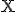
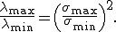
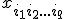
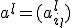

Простой итерационный алгоритм сингулярного разложения
Материал из MachineLearning.
Простой итерационный алгоритм сингулярного разложения матриц допускает простую высокопараллельную (в том числе, нейросетевую) реализацию. Сингулярное разложение матриц (англ. Singular value decomposition) необходимо для решения многих задач анализа данных. В том числе, анализ главных компонент сводится к сингулярному разложению матрицы центрированных данных.
Содержание[убрать] |
Идея сингулярного разложения матрицы данных
Если — матрица, составленная из векторов-строк центрированных данных, то выборочная ковариационная матрица и задача о спектральном разложении ковариационной матрицы превращается в задачу о сингулярном разложении матрицы данных .
Число называется сингулярным числом матрицы тогда и только тогда, когда существуют правый и левый сингулярные векторы: такие -мерный вектор-строка и -мерный вектор-столбец (оба единичной длины), что выполнено два равенства:
Пусть — ранг матрицы данных. Сингулярное разложение матрицы данных — это её представление в виде
где — сингулярное число, — соответствующий правый сингулярный вектор-столбец, а — соответствующий левый сингулярный вектор-строка (). Правые сингулярные векторы-столбцы , участвующие в этом разложении, являются векторами главных компонент и собственными векторами эмпирической ковариационной матрицы
, отвечающими положительным собственным числам .
Хотя формально задачи сингулярного разложения матрицы данных и спектрального разложения ковариационной матрицы совпадают, алгоритмы вычисления сингулярного разложения напрямую, без вычисления спектра ковариационной матрицы, более эффективны и устойчивы [1]. Это следует из того, что задача сингулярного разложения матрицы лучше обусловлена, чем задача разложения матрицы : для ненулевых собственных и сингулярных чисел
- 
Теория сингулярного разложения была создана Дж. Дж. Сильвестром (англ. J. J. Sylvester) в 1889 г. и изложена во всех подробных руководствах по теории матриц [1].
Простой итерационный алгоритм сингулярного разложения
Основная процедура — поиск наилучшего приближения произвольной матрицы матрицей вида (где — -мерный вектор, а —
-мерный вектор) методом наименьших квадратов:
Решение этой задачи дается последовательными итерациями по явным формулам. При фиксированном векторе значения , доставляющие минимум форме , однозначно и явно определяются из равенств :
Аналогично, при фиксированном векторе определяются значения :
B качестве начального приближения вектора возьмем случайный вектор единичной длины, вычисляем вектор , далее для этого вектора вычисляем вектор и т. д. Каждый шаг уменьшает значение . В качестве критерия остановки используется малость относительного уменьшения значения минимизируемого функционала за шаг итерации () или малость самого значения .
В результате для матрицы получили наилучшее приближение матрицей
вида (здесь верхним индексом обозначен номер итерации). Далее, из матрицы вычитаем полученную матрицу
, и для полученной матрицы уклонений вновь ищем наилучшее приближение этого же вида и т. д., пока, например, норма не станет достаточно малой. В результате получили итерационную процедуру разложения матрицы в виде суммы матриц ранга 1, то есть . Полагаем и нормируем векторы : В результате получена аппроксимация сингулярных чисел и сингулярных векторов (правых — и левых — ).
К достоинствам этого алгоритма относится его исключительная простота и возможность почти без изменений перенести его на данные с пробелами[1], а также взвешенные данные.
Существуют различные модификации базового алгоритма, улучшающие точность и устойчивость. Например, векторы главных компонент при разных должны быть ортогональны «по построению», однако при большом числе итерации (большая размерность, много компонент) малые отклонения от ортогональности накапливаются и может потребоваться специальная коррекция
на каждом шаге, обеспечивающая его ортогональность ранее найденным главным компонентам.
Для квадратных симметричных положительно определённых матриц описанный алгоритм превращается в метод прямых итераций для поиска собственных векторов.
Сингулярное разложение тензоров и тензорный метод главных компонент
Часто вектор данных имеет дополнительную структуру прямоугольной таблицы (например, плоское изображение) или даже многомерной таблицы - то есть тензора: , . В этом случае также эффективно применять сингулярное разложение. Определение, основные формулы и алгоритмы переносятся практически без изменений: вместо матрицы данных имеем -индексную величину , где первый индекс -номер точки (тензора) данных.
Основная процедура — поиск наилучшего приближения тензора тензором вида (где — -мерный вектор ( - число точек данных),  — вектор размерности при ) методом наименьших квадратов:
Решение этой задачи дается последовательными итерациями по явным формулам. Если заданы все векторы-сомножители кроме одного , то этот оставшийся определяется явно из достаточных условий минимума.
B качестве начального приближения векторов () возьмем случайные векторы единичной длины, вычислим вектор , далее для этого вектора и данных векторов вычисляем вектор и т. д. (циклически перебирая индексы) Каждый шаг уменьшает значение . Алгоритм, очевидно, сходится. В качестве критерия остановки используется малость относительного уменьшения значения минимизируемого функционала за цикл или малость самого значения . Далее, из тензора вычитаем полученное приближение и для остатка вновь ищем наилучшее приближение этого же вида и т. д., пока, например, норма очередного остатка не станет достаточно малой.
Это многокомпонентное сингулярное разложение (тензорный метод главных компонент) успешно применяется при обработка изображений, видеосигналов, и, шире, любых данных, имеющих табличную или тензорную структуру.
Примечания